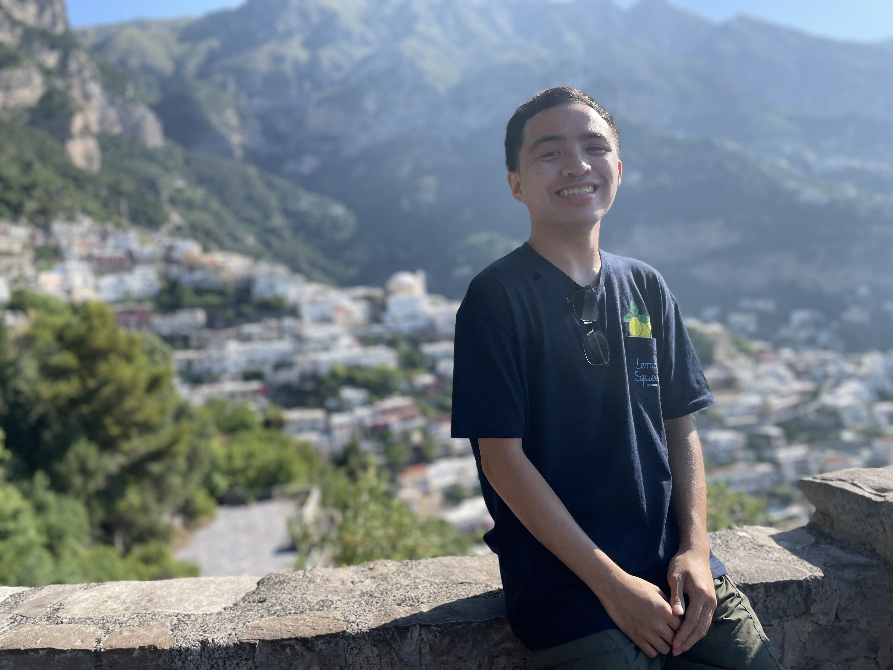

Hi all! My name is Daniel and I'm currently a fourth year studying Computer Science: Game Design at University of California, Santa Cruz. I like to dance (hip-hop) in my free time (currently on the Cruz Ctrl collegiate dance team at UCSC) and I've been at it for about 13 or so years now! I have been inspired by games ever since I was young. I have experience in high and low level programming languages, web-based programming, level design, and game design.
My dance journey began in 2011 when I was at the age of nine and found a passion for hip-hop. Throughout my journey, I have choreographed, performed, and competed with teams in the Bay Area such as Jr. Apprentice, ADV, Cruz Ctrl, and the newly founded team called Dumplings, for which I currently co-direct. Coming from San Francisco down to Santa Cruz, I aspire to share my creative ideas with more people and continue to seek opportunities to exceed my own creative boundaries.
Check out these competitions and showcases that I have performed in!